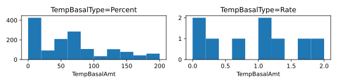
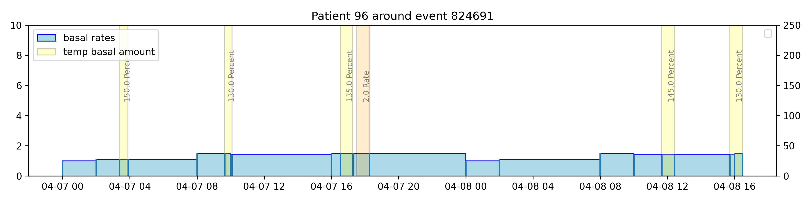
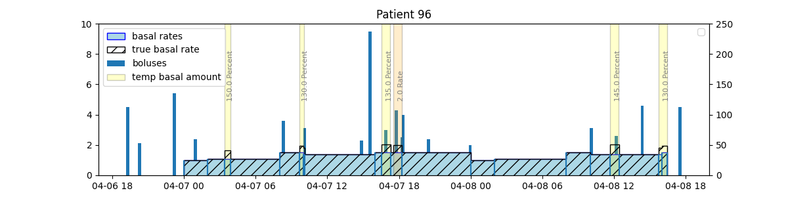
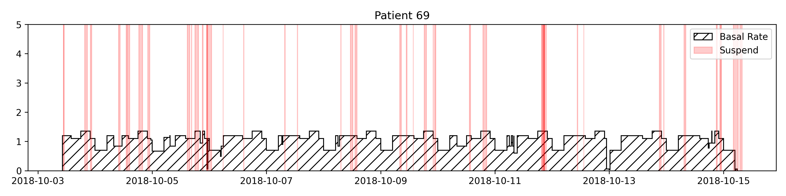
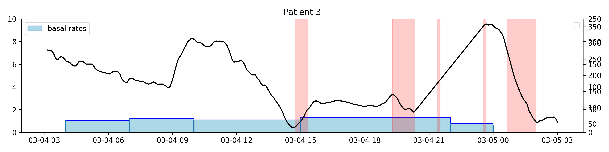
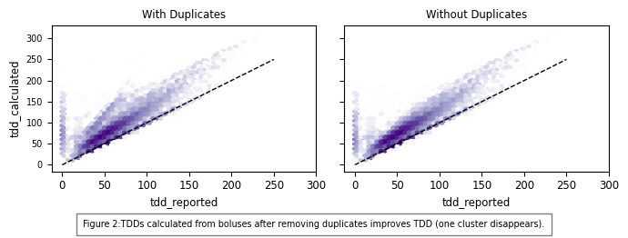
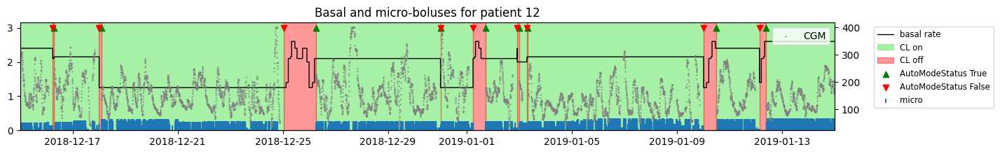
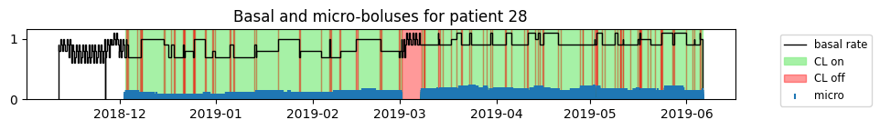
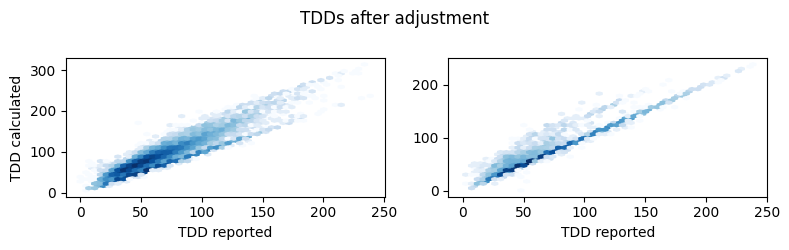

Flair
This page summarizes our insights about the clinical study data of the Flair study in efforts to understand how to handle bolus, basal, and cgm data as well, list assumptions that were made, and pose open questions.
The full analysis of this dataset is provided in: notebooks/understand-flair-dataset/understand-flair-dataset.ipynb and (later added to refine) notebooks/understand-flair-dataset/2024-07-12 - Understanding TDD Discrepancies in Flair Data.ipynb
Study Overview
- Study Name: A Crossover Study Comparing Two Automated Insulin Delivery System Algorithms (PID vs. PID + Fuzzy Logic) in Individuals with Type 1 Diabetes (FLAIR - Fuzzy Logic Automated Insulin Regulation)
- Description: A randomized crossover trial to compare the efficacy and safety of an automated insulin delivery (AID) system with a proportional-integral- derivative (PID) algorithm versus an automatic insulin delivery (AID) system with a PID algorithm enhanced with a Fuzzy Logic algorithm.
- Devices: The Minimed 670G 4.0 Advanced Hybrid Closed-Loop (AHCL) (PID + Fuzzy Logic) pump with the Guardian Sensor (3) continuous glucose monitoring sensor.
Data Description:
The study data folder is named FLAIRPublicDataSet From the DataGlossary.rtf file, the following relevant files were identified which are stored in the Data Tables subfolder.
- FLAIRDeviceCGM.txt: List of CGM data downloaded
- FLAIRDevicePump.txt: List of pump data dowloaded
- PtRoster.txt*: Patient Roster
These are csv files ("|" separator) and host many columns related to the Medtronic pump events and the guardian cgm. The glossary provides information about each column. While there are many columns, the following were identified as relevant.
FLAIRDeviceCGM:
- PtID: Patient ID
- DataDtTm: Date-time of sensor glucose reading
- CGM: Sensor glucose aka CGM - mdDl or mmol/L
- DataDtTm_adjusted: Adjusted value of DataDtTm
FLAIRDevicePump:
- PtID: Patient ID
- DataDtTm: Date-time of pump data
- NewDeviceDtTm: The new date and time if this was changed in the device
- BolusType: Bolus type - The bolus insulin delivery type [Normal, Square, Dual (normal part), or Dual (square part)]
- BolusDeliv: Bolus volume delivered (U) - The number of insulin units actually delivered during the bolus insulin delivery
- ExtendBolusDuration: Duration of the square portion of either a square bolus or a dual wave bolus
- BasalRt: Basal Rate (U/h) - The active basal insulin delivery rate in units per hour
- BasalRtUnKnown: Basal rate unknown as marked in the carelink file
- TempBasalAmt: Temp basal amount - If a temp basal was applied on the pump, this value is the temp basal amount
- TempBasalType: Temp basal type - The type of temporary basal adjustment (insulin rate or percent of basal)
- TempBasalDur: Temp basal duration (h:mm:ss) - The length of time for the temporary basal insulin delivery
- Suspend: State "Suspend" when the pump is suspended and "Resumed" when the pump is resumed
Analysis of the Data
The study data was analyzed to understand which data is relevant, and how it must be manipulated and interpreted in order to obtain the true delivered insulin amounts. The results are mostly based on the analysis in the jupyter notebook understand-flair-dataset.ipynb. Later, a second notebook was added: understand-flair-dataset/2024-08-12 - Modularize-Flair.ipynb that added details to TDDs and closed loop modes focusing on improving the match between reported and calcualted TDDs.
Leading Questions: * Do we need to track DataDtTm_adjusted or can we rely on DataDtTm? * How often do NewDeviceDtTm events happen and do we need to account for these or is DataDtTm sufficient? * How often do BasalRtUnKnown events happen and how should we handle these? * Are TempBasalAmt reflected in the BasalRt? Is the value a rate (U/h) or does it depend on the TempBasalType (Percent/Rate)? * Do we have to keep track of temporary basal durations events (TempBasalDur) or do we get a normal basal rate at the end of the basal rate? * How do we know if the temp basal rate is ended earlier than programmed * How often does the pump suspend (Suspend)? Should we stop counting basal rates in this time? * Do suspend events stop bolus deliveries? Do we need to account for it?
General Findings
- Temp Basal: We have 1446 temp basal values. only 9 of these are set by insulin rate, the others are in percent. These need to be factored in.
- Suspend: There are 72424 suspend events. These need to be factored in.
- Date Adjustments: There are many adjusted datetime events for CGM (none for Insulin). We need to understand how to factor them in.
- There are 684 instances where the device time changes. Unclear if these are reflected.
Datetimes
- Date time strings: From manual inspection we know that there are date time strings without time component. We treat those without as midnight (00AM). If we don't do this in two steps, the loading is extremely slow because python needs to dynamically adjust the formatter.
- Date Adjustments: We need to use the adjusted datetimes for cgm, when it exists.
Unknowns: * We don't know the implications of NewDeviceDtTm. These should be clarified!
Basal Rates
Temp Basal Rates (Background)
Medtronic allows setting temp basal percentages from 0 (shut off) to 200% (twice the basal rate)
Temp basal rates: "The duration of the temp basal rate can range from 30 minutes to 24 hours. After the temp basal rate delivery is completed or canceled, the programmed basal pattern resumes. The temp basal rates and preset temp basal rates can be defined using either a percentage of the current basal pattern or by setting a specific rate, as described as follows:"
Percent: "Percent delivers a percentage of the basal rates programmed in the active basal pattern for the duration of the temp basal rate. The temp basal amount is rounded down to the next 0.025 units if the basal rate is set at less than 1 unit per hour, or to the next 0.05 units if the basal rate is set at more than 1 unit per hour. Temp basal rates can be set to deliver from 0% to 200% of the scheduled basal rate. The percentage used is based on the largest basal rate scheduled during the temp basal rate duration and is limited by the Max basal rate."
Rate: "delivers a fixed basal insulin rate in units per hour for the duration of the temp basal rate. The amount set is limited by the Max basal rate"
[1] MiniMed-780G-system-user-guide-with-Guardian-4-sensor.pdf [2] user_guide_minimed_670g_pump-skompresowany.pdf

Description: Histogram of temporary basal rates reported in the Flair data.
Processing Temp Basal Rates
- We have no unknown basal rates, therefore this column can be ignored
- Basal rates are reported every time they change
- Standard basal rates do not reflect temporary basal rate changes
- Temporary basal rates are either given in percent [%] of the normal basal (TempBasalType=='Percent') or as a delivery rate [U/h] replacing standard basal (TempBasalType=='Rate')
- During temp basal rates are active, Standard BasalRt events can change and are reported

Description: The figure above shows that temporary basal rates are not reflected in the reported basal rates.
Percent: * Standard Basal rates are reported shortly after temp basal start and stop * Temporary Basal Percent rates are reported twice, with the same timestamp but the duration format differs with leading 0 or without leading zeros for the hour (e.g. 00:15:00) vs.(0:15:00) * Interpreting Temp Basal of 100 Percent:The manual notes that The percentage used is based on the largest basal rate scheduled during the temp basal rate duration. So a value of 100% would change the basal rate to the highest standard basal rate, even if it occurs occurs within the duration of the temp basal rate. (Assumption)
Rate: * There are only 9 cases where temporary basal is "Rate", in these cases, standard basal rate is not reported shortly after the temp basal rate starts * Temporary Basal Percent rates are reported once, without leading 0 for duration hour (0:15:00)
Takeaway: To reconstruct true basal rates, we need to consider the TempBasalAmt and TempBasalType. We can use the BasalRt events as a basis and apply the TempBasalAmt for the duration of the TempBasalDur. Depending on the value of the TempBasalType, we either need to multiply the BasalRt by the TempBasalAmt (when TempBasalType is "Percent") or we can directly set the BasalRt to the TempBasalAmt (when TempBasalType is "rate").
To create the correct event history, we take advantage of the fact that basal rates are reported shortly after a Percent rate is set. Here, we simply multiply all basal rates within the temp basal duration period. After the temp basal duration, the standard basal rate is reported and automatically takes over. In the "Rate" case, we know that the standard basal rate is not reported shortly after the temp basal starts, so we need to treat the event as a new basal rate by copying the temp basal amount. While the temp basal Rate is set, standard basal rate changes should be ignored, we do this by setting all basal rates within the active duration to NaN (not 0!). As before, we take advantage of the fact that after the temp basal stops, a standard basal event is reported and automtaically takes over.

Description: The figure above shows the result of applying the method described in the previous section to reconstruct the true basal rates.
Pump Suspends
 * End suspend without start: The very small difference is likely due to glucose suspend events that were started before the observation period. But this makes matching a little more difficult. We want to make sure we match the right pairs! * Most users start with NORMAL_PUMPING: For the majority of users we get a NORMAL_PUMPING event as the first Suspend event without a previous Suspend event. This could be because a) the pump was being set-up (reservoir change, etc.) and reported normal operation (to be verified) or b) there was a suspend event before the data collection started (unlikely because suspends are often short). * First Resume event: For those users whose first suspend event is a resume to normal pumping event, we don't know how long before the pump was suspended. The average time between the first insulin event and this resume event is roughly 0.25 hours. However, the maximum time is >10 hours. * Not reflected in Basal: Suspend events are not reflected in the reported basal or temporary basal rates. * Basal rates are not reported before/after a suspend event starts/stops

SmartGuard
670g manual:
SmartGuard suspend (Suspend before low and Suspend on low) features. SmartGuard suspend features can automatically stop and resume insulin delivery based on your SG values and low limit. When a SmartGuard suspend event occurs, basal insulin delivery automatically resumes if your SG values are rising and have met the specified criteria,
From this it is unclear wether boluses are also cancelled or just basal.
Medtronic FAQ:
I bolused for food I did not eat, will the system stop insulin delivery? If the system sees that the sensor glucose is falling it will decrease the insulin being delivered and/or stop insulin from being delivered. However, it is important that you eat the amount of carbohydrates that you bolused for because the bolus insulin that you gave will already be working in your body. This indicates that boluses will in fact be stopped
Can you deliver a Dual Wave™ or Square Wave™ bolus in SmartGuard™ technology? You cannot deliver a dual or square wave bolus in SmartGuard™ technology. The system is designed to compensate for a delayed rise in sensor glucose levels due to high fat, high carb meals. The auto basal adjustments every 5 minutes and auto corrections may eliminate the need for using the dual or squave wave bolus. So it might not even be relevant for us. Question remains what happens during a suspend while a standard bolus is ongoing.
User Blog Post https://littlet1d.blogspot.com/2015/03/smartguard-dual-wave-bolus-cancellation.html
In this article from 2015 a user complains: The message in the data file (not the pump screen) is the same as before:- Suspend Before / At Low will suspend basal and cancel an extended bolus.
The answer for us is the same: We need to manually go back in after basal has resumed and put in a revised Square Wave bolus if necessary.
Ok, I get it, but I’m still concerned: We know and understand that we need to think about manually inputting a revised Square Wave bolus following a Suspend before Low.
But - and this is, I think a big “but”, there’s no obvious warning / reminder message on Resume to prompt you (or whoever happens to be looking after Janki) to do this. There is an alarm in the pump log, but it doesn’t make it to the screen... :arrow_right: At least in 2015 boluses seem to be cancelled and not resumed automatically, only basal resumes.```
What we learned about SmartGuard
- Extended bolus are not possible during closed loop mode
- Boluses during closed loop mode are often reduced, this is likely a result of the Smartguard feature.
- pump suspends stop basal rates
- pump suspend might also cancel boluses (moving forward, we rely on the reported delivered bolus amounts)
Unknowns: * It is still unclear if suspend events are reflected in the "delivered" boluses (we assume the reported delivered amounts are correct) * One way to check this would be to identify boluses that overlap with a suspend event.
Boluses:
- Normal bolus: provides a single immediate dose of insulin.
- Square Wave bolus: delivers a single bolus evenly over an extended period of time from 30 minutes up to 8 hours.
- Dual Wave bolus: delivers a combination of an immediate normal bolus followed by a Square Wave bolus.

Description: Bolus types explained from the Medtronic Manual.
What we learned about Boluses
- There are (697 or 534) dual wave and 46 sqaure (extended) boluses (<0.02% of the boluses). The dual wave bolus events (square part) (normal part) should be equal in theory. But this could be because some boluses were stopped (working assumption).
- There are very few extended boluses because these are not allowed during closed loop mode
- For dual wave boluses, the number of normal and square events don't match. We assume that these boluses were stopped early. This could be further verified by checking if the number of missing events matches the amount of boluses for which the deliverd amount < the selected (were stopped early).
- When a bolus is stopped early, the shorter duration appears to be automatically reflected in the reported duration (data-based assumption).
- We need to use the delivered bolus rather than the selected bolus.
Unknowns: * It remains unclear if pump suspend events impact the boluses, this should be clarified with the investigator or manufacturer
Bolus Duplicates
Overall, we have 78088 duplicated bolus rows which makes 2.20% of all boluses. After removing these, the reported and calculated TDDs move closer together. The tricky part here was that the bolus source names were different: For example some duplicated micro boluses use CLOSED_LOOP_MICRO_BOLUS while the other row uses CL_MICRO_BOLUS. Therefore, the bolus source is not used to find duplicates, only the datetime and bolus amount. After removing the duplciates, the calculated and reported TDDs matched better: 
Closed Loop Mode
When closed loop mode is on, basal rates are replaced by micro-boluses. To prevent incorrect forward filling of basal rates, closed loop modes must be respected. 
Initially we set all basal rates to zero that occur between closed loop start (AutoModeStatus==True) and stop (AutoModeStatus==False) events. However, when patients transition from the 670G to the AHCL algorithm, the reported AutoModeStatus can be incorrect (e.g. auto mode on but no micro boluses) and correct basal rates would be ignored. 
By only setting the basal rate to zero when a AutoModeStatus true event occurs solves this problem: 1. Basal rates are not forward filled with previous basal rates (e.g. also when suspend events occur) 2. When basal rates are reported again, we trust them.

TDDs
Reported TDDs are used to test our calculated basals and boluses. However, we often see multiple TDDs reported on a single day including zero values. On these days, the reported and calculated TDDs don't match at all and taking the sum or the last or the maximum value still results in a poor fit. Therefore, we can't trust that reported TDDs are 100% accurate, especially on days where multiple values are reported. For testing, days with multiple TDDs should not be trusted.